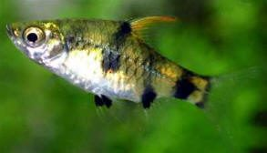

गोल्डन बार्ब मछलीGolden Barb
Pethia gelius · Cyprinidae · FSH-0054

- Scientific name वैज्ञानिक नाम
- Pethia gelius (Hamilton, 1822)
- Family कुल
- Cyprinidae
- Hindi हिंदी
- गोल्डन बार्ब मछली
- Local names स्थानीय नाम
- golden barb, gelius barb, golden barb machhli, sona titli machhli, geli
- Status here यहाँ की स्थिति
- native
- Movement आवागमन
- Resident, here all year
- Known from कहाँ दर्ज
- Others have published records from the wider Awadh–Purvanchal plain, none yet from Basti–Ayodhya अवध–पूर्वांचल से दूसरों के प्रकाशित अभिलेख, बस्ती–अयोध्या से अभी नहीं
- IUCN IUCN
- not evaluated
- Review समीक्षा
- not yet reviewed
When to look कब देखें
Present all year. साल भर मौजूद।
Uses and possibilities उपयोग और संभावनाएँ
Drawn from the documented uses in the profile below, where each is labelled traditional, current or a research lead. All uses →
Tell it apart from इनसे अलग पहचानें
गोल्डन बार्ब मछली / Golden Barb
Pethia gelius (Hamilton, 1822) — Cyprinidae
गोल्डन बार्ब मछली — स्वच्छ तालाबों, नालों और जलकुंभी से भरे तालों में पाई जाने वाली एक बहुत छोटी, चौड़ी और सोने जैसी सुनहरी-पीली देसी बार्ब (barb) मछली है। इसका शरीर अर्ध-पारदर्शी और सुनहरे रंग का होता है, जिस पर पूँछ, पीठ के पंख और पेट के पास काले-काले धब्बे होते हैं। यह पानी में तैरते जलीय पौधों के बीच छोटे झुंडों में रहती है और पानी के बारीक कीड़ों व मच्छरों के लार्वा को खाती है। यह एक्वेरियम रखने वालों के बीच अपनी सुंदरता के लिए बहुत प्रसिद्ध है।
Quick Identification त्वरित पहचान
| Feature | Description |
|---|---|
| Size | Diminutive freshwater cyprinid; reaches about 5.1 cm TL (Froese & Pauly 2025) |
| Body Shape | Short, deep, moderately compressed with an arched dorsal profile (Hamilton 1822) |
| Mouth & Barbels | Small terminal mouth; barbels completely absent (Talwar & Jhingran 1991) |
| Colour | Translucent honey-gold to shimmering brassy-yellow with a silvery belly (Talwar & Jhingran 1991) |
| Diagnostic Spots | Black blotch on caudal base, black patch on dorsal fin base, and spot over anal origin (Hamilton 1822) |
| Dorsal Spine | Slender, osseous dorsal spine finely serrated along its posterior margin (Talwar & Jhingran 1991) |
| Lateral Line | Incomplete, with only 3 to 6 pored scales along the anterior flank (Talwar & Jhingran 1991) |
Field tip: Look among fine submerged weeds in calm ponds and oxbow shallows. A miniature, glowing golden-yellow fish lacking barbels, marked with distinct black spots on the tail base and dorsal fin origin, swimming in tight little groups, is the Golden Barb.
हिंदी: यह बहुत छोटे आकार (लगभग 5.1 सेमी तक) की सुनहरी-पीली मछली है। इसके शरीर पर पूँछ और पीठ के पंख के पास काले धब्बे होते हैं। इसके मुंह पर मूंछ नहीं होती।
Morphology आकारिकी
Size as given by FishBase (Froese & Pauly 2025):
| Measurement | Range | Source |
|---|---|---|
| Maximum length | 5.1 cm TL | Froese & Pauly (2025), FishBase |
Adult description:
Pethia gelius is a diminutive cyprinid with a compact, deep, and laterally compressed body profile (Hamilton 1822). The dorsal contour rises steeply from the snout to the dorsal fin origin, while the ventral profile is smoothly rounded (Talwar & Jhingran 1991). The head is small and conical; eyes are prominent, with a diameter larger than the snout length (Hamilton 1822). The mouth is small, terminal, and slightly oblique, completely devoid of barbels (Talwar & Jhingran 1991).
The dorsal fin originates roughly opposite the pelvic fin origin and consists of 2–3 unbranched and 8 branched rays, supported by a slender, bony spine serrated along its rear edge (Talwar & Jhingran 1991). The anal fin has 2–3 unbranched and 5 branched rays. The pectoral fins are pointed, and the caudal fin is deeply forked with equal lobes (Hamilton 1822). The lateral line is incomplete, ceasing after only 3 to 6 pored scales, with 23 to 24 scales in the lateral series (Talwar & Jhingran 1991).
In life, the fish has an enchanting translucent honey-yellow or bright golden coloration (Talwar & Jhingran 1991). The back is golden-olive, and the belly is gleaming silvery-white. The flanks are adorned with characteristic dark markings: a prominent deep-black blotch on the caudal peduncle just ahead of the tail fin; a dark patch at the base of the anterior dorsal fin rays; a small black spot near the anal fin origin; and occasionally a subtle dusky shoulder smudge (Hamilton 1822). The fins are translucent yellow, often taking on a warm amber tint in breeding males.
हिंदी: इसका शरीर लगभग 5.1 सेमी तक लंबा, छोटा, चौड़ा और चपटा होता है। पीठ का कांटा बारीक और दांतेदार होता है। शरीर का रंग चमकीला सुनहरा-पीला होता है जिस पर काले निशान स्पष्ट नजर आते हैं।
Behaviour & Ecology व्यवहार और पारिस्थितिकी
The Golden Barb is a benthopelagic schooling micro-fish adapted to quiet, weed-rich standing freshwaters (Talwar & Jhingran 1991). It prefers slow-moving streams, oxbow wetlands, canals, and perennial ponds with muddy bottoms and dense submerged vegetation such as Hydrilla, Ceratophyllum, and Chara.
Schools of ten to thirty individuals swim among aquatic weed beds in the middle and lower water layers (Daniels 2002). They browse continuously over plant leaves and fine mud, picking off rotifers, cladocerans, and tiny midge larvae (Talwar & Jhingran 1991). Their diminutive size allows them to navigate intricate submerged foliage where larger predatory fishes cannot easily follow (Daniels 2002). During seasonal monsoon inundations, they disperse into flooded paddy fields and roadside borrow pits to feed on abundant plankton blooms, retreating into deeper permanent tanks as shallow waters evaporate.
हिंदी: यह छोटी मछली शांत तालाबों और पानी में डूबे पौधों के बीच झुंड बनाकर रहती है। यह पौधों की पत्तियों पर जमी काई और छोटे कीड़ों को खाती है और बड़ी मछलियों से बचने के लिए घास में छिपती है।
Life Cycle / Phenology जीवन चक्र
Seasonal phenology in northern Indian alluvial waters across the agricultural year (Talwar & Jhingran 1991; Daniels 2002):
| Season / Month | Stage | Field Observation |
|---|---|---|
| July–August (Kharif monsoon) | Spawning & courtship | Pairs spawn among dense submerged plants in flooded ponds (Talwar & Jhingran 1991) |
| September–November (Post-monsoon) | Juvenile recruitment | Tiny fry shelter in weed beds feeding on rotifers (Daniels 2002) |
| December–February (Rabi winter) | Sub-adult schooling | Dense aggregations assemble in sunny, weed-covered pond margins (Talwar & Jhingran 1991) |
| March–May (Summer / Zaid) | Active foraging | Intense feeding on plankton and algae as water warms (Daniels 2002) |
| June (Pre-monsoon) | Pre-spawning congregation | Gravid females with bright golden bellies assemble near inlets |
Breeding takes place during the monsoon rains from July to August (Talwar & Jhingran 1991). Males display intense golden-amber hues and court females among dense submerged plants. Females scatter tiny, adhesive eggs among fine plant leaves and roots. The eggs hatch after a few days, and tiny transparent larvae cling to vegetation before developing into free-swimming, plankton-feeding fry (Daniels 2002).
हिंदी: बरसात के समय यह जलीय पौधों की पत्तियों पर अंडे देती है। कुछ दिनों में अंडों से बच्चे निकल आते हैं और वे पानी के सूक्ष्म जीवों को खाकर तेजी से बड़े होते हैं।
Diet and Feeding Behaviour आहार
Pethia gelius is an opportunistic micro-omnivore and detritivore (Talwar & Jhingran 1991):
Natural diet components:
- Planktonic micro-crustaceans, including water fleas (Daphnia, Moina) and copepods (Daniels 2002).
- Mosquito wrigglers and pupae (Culex and Anopheles) captured in weedy shallows (Talwar & Jhingran 1991).
- Chironomid midge larvae and tiny aquatic worms browsed from plant surfaces.
- Epiphytic diatoms, unicellular green algae, and fine decomposing plant detritus.
- Rotifers and microscopic protozoans consumed during early life stages.
हिंदी: यह पानी के सूक्ष्म जीवों, काई, शैवाल, सड़े हुए पौधों के बारीक कणों और मच्छरों के लार्वा को खाती है।
Predators / Natural Enemies शत्रु
Documented natural predators in northern Indian alluvial freshwater systems:
- Predatory fishes: Snakeheads like Channa punctata (Spotted Snakehead), small catfishes like Mystus tengara (Tengra Catfish), and climbing perch Anabas testudineus (Climbing Perch) hunt barbs in weed beds.
- Piscivorous birds: Little egrets, pond herons, and common kingfishers capture schools in shallow pond edges.
- Predatory aquatic insects: Dragonfly naiads, water scorpions, and giant water bugs ambush barbs among vegetation.
- Water snakes: Checkered keelbacks pursue schools in shallow weed mats.
हिंदी: गिरई, टेंगरा, कवाई मछली, बगुले और पानी के कीड़े (जैसे व्याध पतंग के निम्फ) इस छोटी सुनहरी मछली का शिकार करते हैं।
Agricultural / Human Relevance कृषि प्रासंगिकता
Natural biological mosquito control: Despite its miniature stature, Pethia gelius is an effective predator of early-stage mosquito larvae in weedy ditches, village tanks, and flooded paddy drains (Talwar & Jhingran 1991). Because it penetrates dense aquatic vegetation where larger fish cannot maneuver, it consumes mosquito wrigglers sheltering in weed tangles, contributing to rural public health (Daniels 2002).
Ornamental aquarium value: Globally celebrated in the aquarium trade as the "Golden Barb" or "Gelius Barb". Its small adult size, radiant golden coloration, peaceful temperament, and ease of care make it an ideal native species for community planted aquariums (Talwar & Jhingran 1991). In rural eastern Uttar Pradesh, it is also caught in fine-mesh shore nets and eaten locally as part of mixed small-fish curries.
Traditional: Consumed as part of mixed wild catches in rural fishing villages.
Today: Highly regarded as an indigenous ornamental aquarium fish and public health biological control agent.
Research direction (a lead, not a result): Assessing captive breeding and commercial rearing of Pethia gelius for rural ornamental fish enterprise development.
हिंदी: यह मछली पानी की घास में छिपे मच्छरों के लार्वा को खाकर मलेरिया और अन्य बीमारियों को रोकने में मदद करती है। अपने सुनहरे रंग के कारण यह एक्वेरियम में बहुत पसंद की जाती है।
Expected Locally स्थानीय रूप से अपेक्षित
Not a field record. Written from published accounts for eastern Uttar Pradesh. No confirmed local sighting yet — if you have seen it, that is what the atlas needs.
अभी तक स्थानीय पुष्टि नहीं। यह विवरण प्रकाशित स्रोतों से है, किसी अवलोकन से नहीं।
The Golden Barb is expected across eastern Uttar Pradesh in weed-rich village tanks, oxbow lakes (tals), slow-moving canals, and flooded paddy ditches. Look among dense submerged vegetation in quiet shallows from August through December. GBIF holds published records from the wider Awadh–Purvanchal plain, none yet from Basti–Ayodhya. A clear photograph showing the miniature golden body, serrated dorsal spine, and distinct black spots on the tail base and dorsal origin, submitted via the About page, would confirm the first local documentation for the project area.
Distribution वितरण
Global range: Native to the northern and eastern Indian subcontinent, recorded from India, Pakistan, Nepal, and Bangladesh (Talwar & Jhingran 1991).
In India: Distributed throughout the Ganges and Brahmaputra river drainages, extending southward into the Mahanadi basin (Menon 1999).
In Uttar Pradesh: Recorded throughout the Ganges, Ghaghara, Rapti, and Gomti basins in oxbow lakes and weed-rich perennial tanks.
In Basti district / eastern UP: Expected as a resident native species in perennial tals, oxbow wetlands, and vegetated drainage canals of the Kuwano and Ghaghara systems.
हिंदी: यह भारत, पाकिस्तान, नेपाल और बांग्लादेश में पाई जाती है। उत्तर प्रदेश के तालाबों, तालों और नहरों में यह स्थायी रूप से उपस्थित प्रजाति है।
Research Questions शोध प्रश्न
- What is the daily consumption rate of Pethia gelius on Anopheles culicifacies larvae in densely weeded habitats? / घनी घास वाले पानी में यह मछली मच्छरों के लार्वा को किस दर से खाती है?
- How do seasonal pesticide runoffs from rice paddies affect schooling coordination in Pethia gelius?
- What are the specific environmental triggers for courtship and spawning in temporary monsoon wetlands? / बरसाती तालों में यह मछली किन परिस्थितियों में अंडे देती है?
- Can community ornamental fish cooperatives breed Pethia gelius locally as a sustainable livelihood activity?
- How does the invasion of water hyacinth impact native macrophyte diversity and Pethia gelius foraging efficiency?
Similar Species मिलती-जुलती प्रजातियाँ
| Species | How to tell apart | हिंदी | |
|---|---|---|---|
| Pethia ticto ([[ticto_barb\ | Ticto Barb]]) | Larger; body lacks golden-yellow ground; marked with two bold black spots on flanks | टिक्टो बार्ब — बड़ी होती है, सुनहरा रंग नहीं होता और शरीर पर दो काले निशान होते हैं |
| Puntius sophore ([[pool_barb\ | Pool Barb]]) | Much larger in size; body silvery without golden ground; single round black spot on caudal base | पूल बार्ब — बड़ी होती है, चांदी जैसी दिखती है और पूँछ पर एक गोल काला धब्बा होता है |
| Puntius chola ([[chola_barb\ | Chola Barb]]) | Possesses two maxillary barbels; distinct dark spot on base of dorsal and caudal fins | चोला बार्ब — इसके मुंह पर दो मूंछें होती हैं और पंखों पर काले धब्बे होते हैं |
Field rule: A miniature, translucent golden-yellow cyprinid lacking barbels, with an incomplete lateral line and distinct black spots on the caudal base and dorsal fin origin, is Pethia gelius.
हिंदी: पूल बार्ब और टिक्टो बार्ब चांदी जैसे रंग की और बड़ी होती हैं, जबकि गोल्डन बार्ब बहुत छोटी (4–5 सेमी), पारदर्शी सुनहरे-पीले रंग की मछली होती है।
Taxonomy & Classification वर्गीकरण
Original description. Described by Francis Hamilton in 1822 as Cyprinus gelius in An Account of the Fishes Found in the River Ganges and Its Branches, page 320. Type locality: Ponds and ditches of north-eastern Bengal.
Subspecies. Monotypic — no subspecies are recognized across its range.
Family and order placement. Order Cypriniformes, family Cyprinidae, subfamily Barbinae. Long placed in the genus Puntius, modern systematic and molecular revisions place it in Pethia Pethiyagoda et al., 2012.
Phylogenetic notes. Pethia gelius is characterized within the genus Pethia by its diminutive size, serrated dorsal spine, incomplete lateral line, and characteristic triad of dark pigment patches (Talwar & Jhingran 1991).
IUCN status rationale. Not evaluated (NE) on the global IUCN Red List of Threatened Species. It maintains widespread, secure wild populations across the Gangetic and Brahmaputra floodplains.
हिंदी: इसका वैज्ञानिक नाम Pethia gelius है और यह Cyprinidae परिवार की सदस्य है। इसे पुरानी पुस्तकों में Puntius gelius लिखा गया है।
Photo Gallery फोटो गैलरी
No photos yet — add field photos to media/species/golden_barb/ and run node scripts/sync_photos.js.
Photos needed आवश्यक फोटो
- [ ] Lateral view of live adult showing radiant golden body and diagnostic black spots (सुनहरे शरीर और काले धब्बों की तस्वीर)
- [ ] School of live barbs swimming among submerged Hydrilla plants in an aquarium (जलीय पौधों के बीच तैरता झुंड)
- [ ] Close-up of dorsal fin showing serrated spine (पीठ के बारीक कांटेदार पंख का दृश्य)
- [ ] Comparison view alongside other small wetland cyprinids (अन्य छोटी मछलियों के साथ तुलनात्मक तस्वीर)
References संदर्भ
- Hamilton, F. (1822). An Account of the Fishes Found in the River Ganges and Its Branches. Archibald Constable and Company, Edinburgh, p. 320.
- Talwar, P. K. & Jhingran, A. G. (1991). Inland Fishes of India and Adjacent Territories, Vol. 1. Oxford & IBH Publishing Co., New Delhi, pp. 266–267.
- Menon, A. G. K. (1999). Check list - fresh water fishes of India. Records of the Zoological Survey of India, Occasional Paper No. 175, p. 74.
- Daniels, R. J. R. (2002). Freshwater Fishes of Peninsular India. Universities Press, Hyderabad, pp. 76–78.
- Froese, R. & Pauly, D. (Eds.) (2025). FishBase. World Wide Web electronic publication.
- GBIF Occurrence Data — Pethia gelius, India (2025).
Source file: species/fauna/fish/golden_barb.md